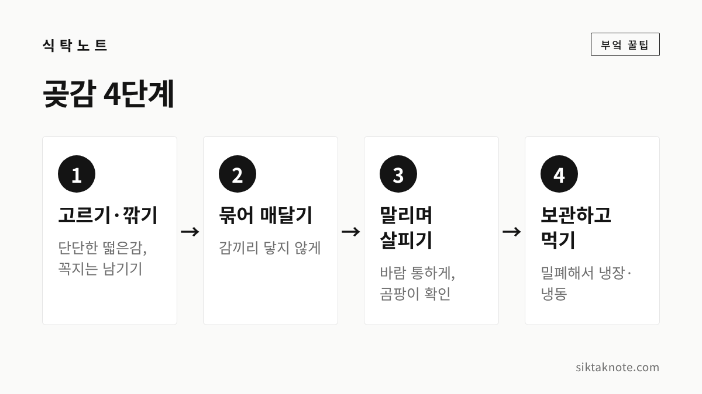
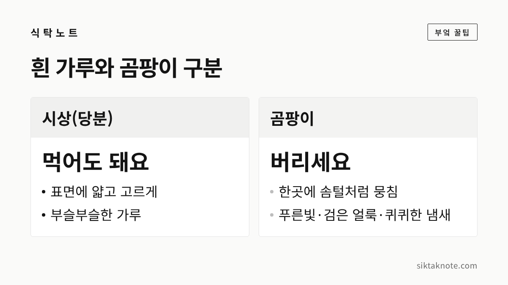

곶감 만드는 법 4단계, 집에서 말리는 방법

3줄 요약
- 곶감은 단단한 떫은감을 골라 깎고, 꼭지를 묶어 바람이 잘 통하는 곳에 매달아 말리는 네 단계로 만들어요.
- 건조 기간은 날씨와 말리는 방식에 따라 크게 달라서, 날짜보다 감의 겉과 속 상태를 보고 거두는 게 좋습니다.
- 흰 가루인 시상은 당분이 배어 나온 것이지만 솜털 같은 곰팡이는 통째로 버려야 해요.

늦가을 처마 밑이나 베란다에 주황빛 감이 줄줄이 걸려 있으면 겨울이 온 것 같은데요. 곶감은 껍질을 벗겨 말리기만 하면 되니 재료도 단출하고, 집에서도 만들어 볼 수 있습니다. 다만 비가 잦거나 습한 해에는 곰팡이가 피기 쉬워서 요령이 필요해요. 오늘은 고르기와 깎기, 매달기, 말리며 살피기, 보관하기까지 네 단계로 나눠서 알려 드리겠습니다.
먼저 알아 둘 것
한국민족문화대백과사전은 곶감을 "껍질을 벗겨 말린 감"이라고 설명하고, 한자로는 건시(乾枾)라고도 한다고 적고 있습니다. 말리는 동안 떫은맛을 내는 성분이 변하고 단맛이 짙어지는 거예요. 한 언론 보도에서는 수용성 타닌이 불용성으로 바뀌면서 떫은맛이 사라진다고 풀어 줬습니다.
시중에서는 말린 정도에 따라 건시와 반건시로 나눠 부르는데요. 건시는 수분을 많이 날려 단단하고 표면에 흰 가루가 생기고, 반건시는 수분을 일부 남겨 더 말랑하고 반투명한 주황빛을 띤다고 합니다. 집에서 처음 만드신다면 얼마나 말릴지 미리 정해 두고 시작하시는 게 좋겠습니다.
언론 보도에 따르면 상주에서는 곶감을 11~12월에 말린다고 하니, 지금이 한창 말리는 철입니다. 상주는 재래종인 둥시로 유명하고, 경남 산청에서는 고종시, 다른 지역에서는 대봉시나 반시로도 곶감을 만든다고 알려져 있어요. 모두 단단할 때는 떫은 감들입니다.
집에서는 마트나 시장에서 파는 단단한 떫은감을 쓰시면 되는데요. 품종마다 말리는 시간이 같지는 않으니, 어떤 감인지 산 곳에서 확인해 두시면 도움이 됩니다.

1단계. 단단한 떫은감 고르고 깎기
감은 손으로 살짝 눌러도 들어가지 않을 만큼 단단한 것을 고릅니다. 대백과는 완전히 익기 전에 딴 떫은 감이 곶감에 좋다고 소개했어요. 한 신문 칼럼에는 흠집이 있거나 무른 감은 말린 뒤에도 검은 자국이 남는다는 이야기가 나옵니다. 꼭지가 튼튼한 감이어야 나중에 매달기도 편해요.
손질은 이렇게 합니다.
- 흐르는 물에 씻고 물기를 완전히 닦아 둡니다.
- 꽃받침 잎은 정리하되 꼭지 가운데 줄기는 조금 남겨 둡니다. 이 줄기가 끈을 묶는 자리가 돼요.
- 필러나 칼로 꼭지 쪽부터 아래까지 얇게 깎습니다. 한 정보 글에서는 껍질을 두껍게 깎으면 말리는 시간이 길어진다고 했습니다.
- 깎은 감은 오래 두지 말고 바로 매답니다.
대백과가 전하는 전통 방식에는 쇠칼이 감의 타닌과 반응해 빛깔이 변할 수 있으니 스테인리스 칼을 쓰라는 설명도 있습니다.
끓는 물에 살짝 담갔다 빼는 방법도 흔히 소개되는데요. 이 방법은 제가 본 공공 자료에서 근거를 찾지 못했습니다. 그래서 이 글에서는 권하지 않고, 깎은 직후 매다는 순서만 적었어요.

2단계. 꼭지를 묶어 매달기
깎은 감은 꼭지에 끈을 단단히 묶거나 곶감걸이에 끼워서 매답니다. 감끼리 닿지 않게 간격을 충분히 두는 게 중요해요. 닿은 자리는 물기가 오래 남아 무르기 쉽거든요.
한 언론 보도에서는 깎은 감을 건조기에 하루 반쯤 넣어 겉을 먼저 말린 뒤 다시 거는 곳도 있다고 전했습니다. 겨울이 따뜻하고 비가 잦아지면서 곰팡이 피는 일이 늘었기 때문이라고 해요. 집에서 건조기를 쓰는 방법은 제가 확인한 자료에서 온도와 시간을 찾지 못했습니다.
아파트에서 말릴 땐
단독주택 처마가 없어도 베란다에서 말려 볼 수 있습니다. 한 정보 글에서는 이렇게 안내했어요.
- 직사광선을 피하고 비가 들이치지 않는 바람길을 만듭니다. 베란다라면 창문을 조금 열어 두세요.
- 보일러 배관이나 에어컨 실외기 앞처럼 따뜻하고 습한 곳은 피합니다.
공식 기관이 아파트 건조법을 따로 안내한 자료는 확인하지 못했어요. 그래서 집 구조에 따라 달라질 수 있다는 점을 염두에 두시고, 습한 날이 이어지면 더 자주 살피시는 게 좋겠습니다.
3단계. 말리는 동안 살피고 곰팡이 막기
가장 오래 걸리고 신경 쓸 부분이 이 단계입니다. 대백과는 감이 무게에 비해 마르는 면적이 좁으니 급하게 말리지 않는 게 좋고, 너무 말리면 과육이 굳고 덜 말리면 곰팡이가 생기기 쉽다고 적고 있어요. 그래서 날짜보다 상태를 보는 편이 안전합니다.
- 겉이 꾸덕하게 굳어 오면 위치를 바꾸거나 뒤집어서 고르게 말립니다.
- 비 오는 날과 습한 날에는 실내로 들이되 바람은 계속 통하게 합니다.
- 하루 한 번은 꼭지 둘레와 감이 서로 닿던 자리를 확인하세요.
한 보도에서는 껍질을 벗긴 직후 소주를 분무기로 뿌리거나 키친타월에 묻혀 닦는 방법을 소개했습니다. 다만 같은 기사에서 소주가 살균을 보장하지는 않는다고 했으니, 날씨가 궂은 해에는 이 방법에만 기대지 마시고 자주 살펴야 해요.
건조 기간은 날씨에 따라 달라요
건조 기간은 방식과 날씨에 따라 많이 달라서 하나로 말씀드리기 어렵습니다. 한 정보 글은 집에서 보통 3~5주가 걸리고 반건시는 3~4주쯤이라고 했는데요. 산청 덕산의 전통 건시는 깎은 뒤 한 달에서 한 달 반 정도 더 말린다는 보도가 있었습니다. 같은 지역이라도 그해 날씨에 따라 달라질 수 있어요.
그러니 며칠이라고 정하기보다 손으로 눌러 보시는 게 좋습니다. 겉은 굳고 속은 말랑한 정도면 반건시, 속까지 쫀득해지면 건시에 가깝습니다. 정확한 수분 기준은 가정에서 재기 어려우니 이 정도로만 보시면 됩니다.
시상과 곰팡이, 이렇게 구분해요

말리다 보면 표면에 흰 가루가 앉는데요. 대백과는 이 가루를 시상이라 부르며 당분이 표면에 결정으로 나온 것이라고 설명합니다. 농촌진흥청도 당 성분이 밖으로 나와 굳은 것으로 안내한다고 알려져 있어요. 포도당과 과당이 주성분이라고 합니다.
곰팡이는 모습이 다릅니다. 한 보도에 따르면 한자리에 솜털처럼 뭉쳐 도드라지고, 시간이 지나면 주변으로 번지며, 푸른빛이나 검은 얼룩에 퀴퀴한 냄새가 납니다. 곰팡이가 보이면 그 부분만 도려내지 말고 통째로 버리는 게 안전합니다. 곰팡이독소는 열에 강해 조리해도 완전히 없어지지 않는다고 식품의약품안전처가 안내한 적이 있는데, 이는 곶감 전용 안내가 아닌 곰팡이 일반 설명입니다.
4단계. 보관하고 먹기
다 마른 곶감은 밀폐 용기에 담아 냉장하거나 냉동합니다. 상온에 오래 두면 표면이 끈적해지고 벌레가 꼬이기 쉬워요. 반건시는 수분이 많아 건시보다 저장성이 낮다고 하니 먼저 드시는 게 좋습니다. 한 보도에서는 반건시를 얼리면 수분이 더 날아가 딱딱해진다고도 했어요. 가정에서 며칠까지 두어도 되는지는 확인한 자료가 없습니다.
먹는 방법은 그대로 드셔도 좋고, 수정과에 띄워도 좋습니다. 대백과는 수정과를 생강과 계피 달인 물에 곶감과 잣을 넣은 음료로 설명하는데요. 곶감은 꼭지를 떼고 씨를 발라 낸 뒤 생강물을 조금 부어 불렸다가 넣으라고 적고 있어요. 수정과에 쓸 생강을 오래 두는 법은 생강 보관법에 적어 두었습니다.
곶감 하면 우는 아이를 달랜 호랑이 이야기를 떠올리는 분도 많으실 텐데요. 그 옛이야기는 호랑이 곶감 이야기에서 따로 풀어 보았어요. 말리기 전 감을 어떻게 두는지가 궁금하시다면 감 보관법도 함께 보세요.
자주 묻는 질문
단감으로도 곶감을 만들 수 있나요?
제가 본 자료는 모두 떫은감을 기준으로 안내했어요. 단감으로 만든다는 안내는 확인하지 못했습니다.
비가 계속 오면 어떻게 하나요?
실내로 들이고 바람이 통하게 하되, 자주 살피세요. 곰팡이가 보이면 통째로 버리는 게 안전합니다.
하얀 가루가 생겼는데 괜찮을까요?
표면에 얇고 고르게 퍼진 부슬부슬한 가루라면 시상일 가능성이 높습니다. 솜털처럼 뭉쳐 있거나 냄새가 이상하면 곰팡이로 보고 버리세요.
네 단계를 다시 짚어 보면 단단한 떫은감을 골라 깎고, 꼭지를 묶어 매달고, 바람 속에서 살피며 말린 뒤, 밀폐해서 보관하는 것입니다. 건조 일수는 날씨에 따라 달라지니 날짜보다 감의 상태를 믿으시는 게 좋겠습니다.